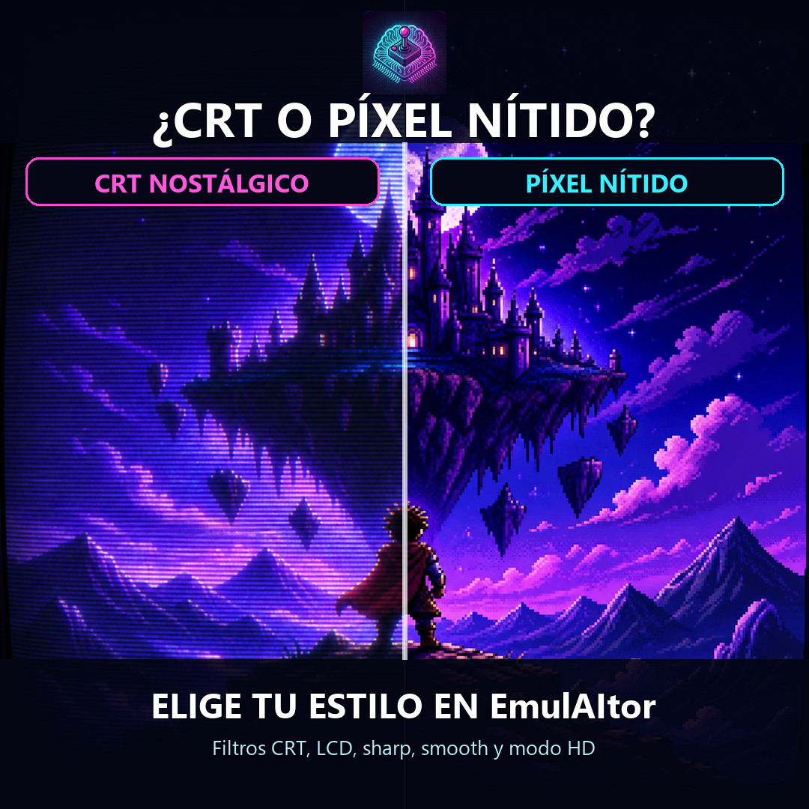

EmulAItor · RolemIAster
¿CRT nostálgico o píxel nítido?
EmulAItor te permite adaptar la imagen retro a tu estilo con filtros CRT, LCD, sharp, smooth y modo HD.

CRTLCDSharpSmoothModo HD
Elige cómo revivir el píxel
CRT nostalgia or razor-sharp pixels?
Choose your retro look with CRT, LCD, sharp and smooth filters, plus HD mode in EmulAItor.